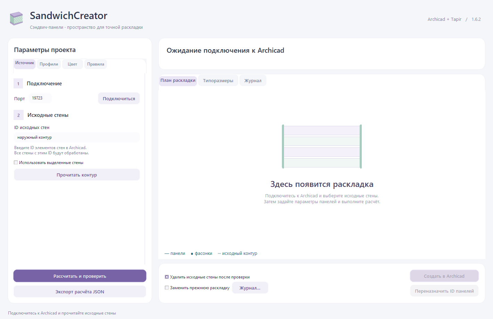

Widely used standard widths
1190 and 1000 mm
External add-on for Archicad
Turns a wall outline
into sandwich panels
with your settings in just a few clicks
SandwichCreator is an application that automatically lays out sandwich panels and flashings in Archicad.
Connecting to Archicad requires Tapir 2.0.0
Windows x64Version 1.6.6
Panel height 1190 mm
Choose a color
Profile
RAL 5005Illustration · calculations run in the app
01
Source walls
by ID or selection
02
Parameters
profile height and thickness,
color, joint width, panel length
03
Result
with editing available
Lay out sandwich panels in 3D in just a few clicks
Standard thickness range
from 50 to 200 mm
Openings are accounted for.
Standard flashings are used
Your outline stays fixed
Original wall lines stay in place. Set a range for joints between panel ends; the default is 10–25 mm.
Panel types, organized
Lengths are rounded to the nearest centimeter. Matching lengths and profiles share an ID. Reassign IDs after manual changes.
Data stays in the model
Colors, height, thickness and the GOST designation are saved in panel properties. Export the GOST panel schedule to Excel.
Your project. A calmer interface.
Complex geometry.
Clear settings.
Related settings are grouped together.
A soft palette keeps the focus on your project.

Enter source wall IDs or use the current selection in Archicad.
Screenshots show the current Russian-language app interface.
A few steps to your first facade
Start with
your own project.
Panel and flashing profiles are embedded in the EXE. No sample elements are needed in your source project.
- 1
Open Archicad with Tapir
Open your project and make sure the Tapir add-on is available.
- 2
Launch SandwichCreator
Connect to Archicad and read the source walls. No separate Python installation is required.
- 3
Review and create your layout
Choose your settings, review the layout plan and panel types, then create the elements in Archicad.
Less repetition. More design.
Build your facade.
SandwichCreator 1.6.6 · Windows x64
Download app EXE · 13.0 MB · Python included
Requires Archicad and the Tapir add-on on the same computer. Openings require the corresponding Archicad library.
A few things to know
Before you begin.
Which Archicad versions are supported?
This build has been tested with Archicad 27 and Tapir 2.0.0. Compatibility with other versions needs to be checked separately.
Can I enter a RAL color code?
Yes. Choose from 15 suggested colors or enter a code from the built-in RAL Classic catalog. On-screen color swatches are approximate.
Can I continue after manual edits?
The panel ID reassignment button checks current profiles and 3D lengths, rounds lengths to the nearest centimeter and groups matching panels.
What is the best way to try it?
Save your source project and try a small wall outline. Before creating elements, review the layout plan, adjusted heights and panel type table. You can turn off source wall deletion in the app.